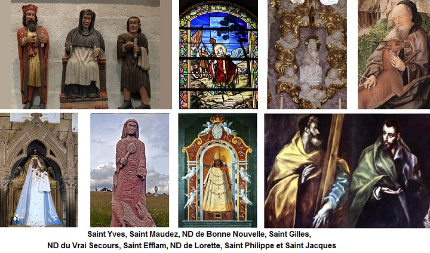

Son ar pevar munuz
Chanson des quatre menuisiers
Song of the four carpenters
Chant collecté par Théodore Hersart de La Villemarqué
dans le 2ème Carnet de Keransquer (p. 3-5).

Mélodie
Arrangement Christian Souchon (c) 2019
|
A propos de la mélodie Inconnue, remplacée par "Kimiad ar soudard yaouank", tiré du recueil "Sonioù Pobl", de Fañch Danno, édité par Skol Vreizh en mai-juin 1968. Cette mélodie dans le mode hypolydien accompagne le texte homonyme du poète Prosper Proux (1811- 1875). Ce poème suit le même schéma rythmique que "Pevar munuz". (Source: Site de Pierre Quentel - voir "liens"). A propos du texte Il semble que La Villemarqué soit le seul à avoir noté cette gwerz. Le chant page 60 du même carnet N°2 que nous avons intitulé 'Loeiz Pevarzek - Louis XIV" semble être une variante ou la suite du présent chant. On peut toutefois supposer que cette gwerz était connue. En effet, l'émouvante gwerz de Prosper Proux a trait à la conscription telle qu'elle était organisée par le décret impérial du 29 décembre 1804 ou des règlements ultérieurs, qui éloignaient de leurs foyers des jeunes gens ne parlant souvent pas le français pour des durées qui sont allées jusqu'à 7 ans. Elle présente avec la présente pièce une similarité frappante qui autorise à penser que Proux la connaissait. |
About the tune Unknown, replaced by "Kimiad ar soudard yaouank", from Fañch Danno's collection "Sonioù Pobl", edited by Skol Vreizh in May-June 1968. This melody in the hypolydian mode accompanies the homonymous text by poet Prosper Proux (1811- 1875) which follows the same rhythmic pattern as "Pevar Munuz". (Source: P. Quentel's website - cf. "links"). About the lyrics: It seems that La Villemarqué is the only collector of this "gwerz" . The song on page 60 of the same notebook N ° 2 which we have entitled 'Loeiz Pevarzek - Louis XIV' seems to be a variation or the continuation of the present piece. It can be assumed, however, that the song was circulated, since a moving ballad by Prosper Proux relating to conscription, as it was organized by the imperial decree of December 29, 1804 or subsequent regulations, addresses the same topic: circonscription removed from their homes young people who often did not speak French for many years, up to 7 years indeed. Proux' poem has with the present song a striking similarity which suggests that he knew it. |
TEXTE DU CHANT
|
BREZHONEK p. 3 ====== Sous Louis XIV.====== 1. Me ho ped, o kompagnunezh, tud deol ha kuriuz, Da zelaou kanañ ur vuhez [werz?] zo graet war pevar munuz, Zo graet war pevar munuz yaouank, pevar munuz [soudard] dibabet, Zo aet [evide] da zervijañ ar Roue deus parrez Plougernet. [1] 2. Na bremañ eus hanter-kant bloaz, abaoe miz Meurzh tremenet, Dre urzioù ar Roue Bro-Chall, ar Roue Loeiz Pevarzek, Abaoe ma deuet ar vandad [ar c'hannad] dre ar charter hag ar vro: Renker sevel seizh mil soudard diwar an holl barrezioù. [2] p. 4 3. Gelver a raent dre ar vandad [ar c'hannad], etrezoch ar paotred yaouank, Korfet-kaer, tud di-strinket, tud di-abuz ha di-vank [gallant] Adalek daou bloaz war-nugent betek daou-ugent renet: E chalver ar baotred yaouank dont da dennañ ar bilhed. [3] 4. Piv a aro? piv a vedo? piv a dorno an aed ? Tud a voe en o pemp troatad ha ne voent-i dimeet... N'e-deuz nikun hag e feson 'n em gallont 'n em akuziñ. Dindan poan a bunision renkont holl aboasiñ. [4] [Na pe deus tennet ar bilhed e faveur da bep-hini]. 5. Ar Senechal deus ar ger [c'hartel] Neb a welje ar pevar zo bet meurbet estonet, Wel't ar pevar munus yaouank 'vont a-gevred [engelved] da Wened, Dimeus o gwelet o taeraoui [tarousi] hag o teurel [taolet] bruilhoù gwad, Gant ar glachar hag an enoe ma gouezhent dann douar blad. [5] 6. Pa oant digouezhet barzh [porzh] "ar Velin", ha distroent choazh eus ker, Lar "kenavo" dar Wenediz ha d'an eskopti Treger: - Chwi Itron Varia Gwir Sikour, am-boa kemer't evit mamm, Plijfe ganeoch-c'hwi me ziwall diouzh gwalleurioù divlam! 7. Ma vijech bet tud a feson, evel ma dlefech bezañ, Chwi --pije roet bep a brofig dan dud-mañ da gas gante. N'ho-peuz roet na botez na loer, na frouder na mouchouer, Homañ zo r frealzidigezh Dan dud-mañ da zont er ger. - [6] 8. Neb a wele ar pevar munus o vonet den-em ouestliñ: Da Rosera, dal Loretez, da Zantez Ana Gwenediz; « On tirait à la milice » p. 5 Da Zant Efflam, da St Herve, Sant Fulup ha Sant Jakez, Chwi Itron Varia 'r C'helou, Sant Jili ha Sant Vodez. [7] 9. Na pe kriz a vije ar galon, daoulagad ma na ouelje E-barzh ar ruioù Roazhon, dan naontegved deiz a vis Mae, [8] Gwelout an tadoù hag ar mammoù, dont o-daou do vriata - Kenavo ma bugaligou, birviken nho gwelimp mui-ta... 10. Tud n'o-deuz na ti na toenn, madoù, na fond, na leve, No-deus nemet poan o div-vrech da zikour |zoutenn] o mammou-se. Mez kemerit ho chapeled hag hen larit ur wech bemdé, Hag ann Itron [ar Werc'hez] ho tiwalo, kerkoulz en noz hag en déiz. KLT gant Christian Souchon |
TRADUCTION FRANCAISE p. 3 ====== Sous Louis XIV.====== 1. Une curiosité sainte vous a tous rassemblés: Veuillez ouïr la complainte des quatre menuisiers! Des quatre menuisiers [soldats] fort jeunes, que le sort a désignés, Pour qu'ils aillent servir la couronne bien loin de Plougernevel. [1] 2.. Depuis cinquante ans, je pense à fin mars maintenant Par ordre du roi de France, Louis Quatorze le Grand, Il convient que dans notre province, dès qu'est émis le "mandat", [l'avis est publié] On lève dans toutes les paroisses. en tout, sept mille soldats. [2] p. 4 3. Or ledit "mandat" s'adresse, à vous, les jeunes gens, Bien bâtis, mine discrète, sobres, parfaits galants. Agés de vingt-deux ans à quarante, selon le règlement, Le destin de chacun va dépendre du billet que l'on prend. [3] 4. Qui laboure ou moissonne? Qui d'entre eux bat le blé? Mariés avec personne, et mesurant cinq pieds, Libres de charges et d'apparence n'inspirant point de soupçon, Il faudra bien que tous ils s'y fassent Sous peine de punition. [4] [Aucun des quatre n'a tiré de billet favorable] 5. Le Sénéchal du village, [Quiconque eût vu les quatre] vrai, n'en revenait pas, De les voir partir pour Vannes Tous les quatre à la fois, Après les avoir vus fondre en larmes, Vomir des caillots de sang, En proie au chagrin et aux alarmes, Et tombant de tout leur long. [5] 6. De retour vers leur campagne, ils vont au "Moulin Vieux" Faire aux évêchés de Vannes, et Tréguier, leurs adieux: Vous Notre-Dame de Bon-Secours, Mère selon mon coeur, J'implore votre protection pour Conjurer mon malheur. 7. Eussiez-vous été honnêtes, Comme il se doit, dit-on, Vous eussiez accordé quelques Cadeaux à ces garçons, N'avez donné ni bas, ni souliers, Ni foulard, ni mouchoir, C'était le moyen de consoler Ces gens venus vous voir.) - [6] 8. A la Vierge ils se vouèrent, les quatre menuisiers, A Lorette et son rosaire A Sainte-Anne d'Auray [des Vannetais] « On tirait à la milice » p. 5 A Saint Philippe et à Saint Jacques, Saint Efflam, Saint Hervé, La Vierge de Bonne-Nouvelle, Saint Gilles, Saint Maudez. [7] 9. L'âme eût été bien vilaine Qui n'aurait point pleuré Voyant, dans les rues de Rennes, C'était le dix-neuf mai, [8] Les pères et les mères venus Là pour les embrasser. - Adieu, mes enfants, je ne crois plus, Vous retrouver jamais. 10. Qui n'a ni toit, ni chaumière, Biens, ni rente, ici-bas, Pour aider ses père et mère Que la force des bras, Qu'il récite donc son chapelet Une fois chaque jour. Notre-Dame tient à protéger Qui cherche son secours. [9] Traduction: Christian Souchon |
ENGLISH TRANSLATION P. 3 ======In the reign of Louis XIV====== 1. Both pious and curious folk To my song lend an ear, Around me together flock To hear it, please, draw near, On four young carpenters [soldiers] was made My song. Its quite novel Bad luck chose them to serve their king Far from Plougernevel. [1] 2. Full fifty years have gone by On the last day of March, Since by the order of Louis The Fourteenth, king of France An edict was passed stipulating That throughout the kingdom Seven thousand soldiers be levied in Every ward and canton. [2] p. 4 3. They summon by this order The lot of you, young lads, Who are well-built and sober, Abstemious, free of fads, Aged between twenty-two and forty years: These are the conditions. Any young man meeting them should appear Before the commission. [3] 4. Unless they sow or they reap, Or thresh the wheat for bread All young men over five feet Tall and who are not wed, Without a wife, children or any sort Of disability, On pain of punishment must report And draw lots presently. [4] None of the four drew a favourable ticket. 5. The seneschal of the quarter [district] [whoever saw them] was a great deal surprised, To see the handsome four joiners leave, all of them, to Vannes: The moment before, they'd felt so low, Vomited clots of blood, Had rolled with pain and deep sorrow About upon the ground! [5] 6. On their way back from the main town They entered The Mill To say farewell to those of Vannes And Tréguier, drank their fill: - Our Lady of Good-Help, Our Lady, In my own mothers stead From misfortune, please, protect me On the paths I must tread! 7. - If these people had been decent, As, sure, they ought to be, They had favoured with a present The like of you and me; Not even a pair of stockings or shoes, A handkerchief, a shawl! That would have brightened up our tale of woe, Since they hold us in thrall. - [6] 8. Strange to hear those four carpenters Devote themselves in array To the Rosary of Lorette And to Saint Ann of Auray « Militiamen were selected by drawing lots» p. 5 To Saint Philip and to Saint James, Saint Efflam, Saint Hervé, To you, Our blessed Lady of Good-News, To Saint Gilles, Saint Maudez. [7] 9. Cruel-hearted would those have been Who had kept sorrow at bay, On seeing in the streets of Rennes On the nineteenth of May [8] The dads and moms together come Once more just to kiss them: - Alas farewell, O my dear children! We wont see you again! 10. Ye all with no roof or farm, Goods future or present, Only the strength of your arms To provide for your parents, Just pray your rosary daily, Always keep it nearby! Youll be defended by Our Lady Until the day you die! [9] Translated by Ch. Souchon |
NOTES:
|
[1] La Villemarqué avait noté "Ploughernet", sans doute par référence au nom breton de "Plouguerneau" au nord de Brest (Guernet=Kernev= Cornouaille). Les noms des saints invoqués par les malheureux menuisiers (cf. note [7]) dessinent, hormis Saint-Efflam, un arc de cercle de 8 km de rayon, centré sur Guingamp, au nord/ nord-ouest de cette ville, allant de Saint-Gilles-les-Bois au Ménez-Bré. D'autre part, à la strophe 5, il est dit que les quatre jeunes hommes sont convoqués à Vannes, puis à la strophe suivante qu'ils disent adieu à la fois aux Vannetais et à l'évêché de Tréguier. On peut donc penser qu'ils ont leurs foyers à mi-chemin entre Guingamp et Vannes. Le bourg de Plougernevel à côté de Rostrenen, en Cornouaille, semble être la localité visée à la strophe 1. [2] Comme l'indique la phrase notée verticalement en marge de la page 4, en face de la strophe : "On tirait à la milice", il est question ici de la milice royale ou provinciale instituée par Louvois en 1688, au début de la guerre de la Ligue d'Augsbourg et abolie en 1791 par l'Assemblée nationale. En 1691, le secrétaire d'État à la guerre ordonnait que les miliciens soient désignés par tirage au sort parmi les hommes valides de la paroisse. Le récit pourrait donc se situer, selon l'indication de la strophe 2, 50 ans après l'ordonnance instituant le tirage au sort, soit en 1741, au début de le la guerre de Succession d'Autriche. Dans ce système qui sera réformé en 1765, le nom de chaque miliciable est inscrit sur un papier. On tire autant de papiers qu'il y a de "postes à pourvoir" dans la paroisse considérée. [3] On remarque toutefois que ce n'est pas ce que dit la strophe 3: "On demande aux jeunes hommes de venir tirer un billet". On est donc après 1765, date depuis laquelle c'est un autre procédé qui s'applique: il y a autant de papiers que de miliciables: les uns sont blancs, les autres portent l'indication fatidique "milicien". Il y a autant de ces "billets noirs", qu'il y a de miliciens à obtenir. L'obligation de se soumettre au tirage au sort s'impose, selon la guerz, aux hommes âgés de 22 à 40 ans. [4] La strophe 4 énumère les cas d'exemption: les agriculteurs (on cherche à préserver l'agriculture), les chefs de famille, les infirmes et les hommes de petite taille (moins de 5 pieds=1,62 m). Les 4 menuisiers n'entrent dans aucune de ces catégories. En temps de paix, ils devront s'entraîner au maniement des armes, dans un camp militaire, quelques semaines par an (ici à Rennes). En temps de guerre ils serviront à alléger la tâche des troupes régulières, principalement à la garde des places fortes. [5] Le Sénéchal (strophe 5) est l'officier de la justice royale. Sa juridiction est ici appelée "quartier" (breton "karter"). On voit que la mise en uvre locale de la levée de la milice lui incombe. Sa surprise, ou celle de tout un chacun selon la variante notée juste après, révèle une des faiblesses du système appliqué sans discernement: Tout un corps de métier de métier peut se trouver localement dégarni, en l'occurrence celui des menuisiers. Des perfectionnements seront introduits par la suite pour tenter de pallier ce type de défaut. On peut supposer que les jeunes conscrits doivent d'abord se rendre à "[G]wenet" (Vannes), pour y suivre une formation d'une ou deux semaines au maniement des armes et à l'ordre serré. Cet éloignement de leur environnement familier, leur paroisse, provoque chez eux une réaction psychosomatique de désespoir décrite dans des termes particulièrement expressifs. Le mot "ennui" (breton "enoe") avait encore au XVIIIème siècle le sens de "peine atroce" qu'il tient de son étymologie (de "nuire", du bas latin "inodiare", un dérivé d'"odium", la haine). [6] Aux strophes 6 et 7, il est dit qu'après leur séjour à Vannes, d'où ils sont revenus par leurs propres moyens, sans qu'on leur fournisse l'équipement de base pour des fantassins, à savoir des souliers ("botez", pl. "botoù"), des bas ("loer"), une écharpe ("frouder" [?]), un mouchoir ("mouchouer"), les miliciens se sont arrêtés au " Moulin" (breton "Ar Velin"), sans doute un auberge, où on les a entendus, soit dans la salle (e-barzh), soit dans le jardin (e-porzh), invoquer tout d'abord la protectrice du Trégor, la Vierge noire, "Notre-Dame du Vrai-Secours", abritée sous le porche de la cathédrale de Guingamp. [7] Puis (les bolées de cidre aidant?), ils déroulent, strophe 8, la longue hagiographie des "saints à qui se vouer" (breton: "en em gouestlañ"): universels d'abord, puis locaux ou propres à leur profession: - Le culte de ND de Lorette est né en 1294 lorsqu'un prince byzantin fit remonter à Loreto sur la côte adriatique de l'Italie centrale une maison de Nazareth, considérée comme celle qu'habita jadis la Vierge. Le site attira tant de pèlerins de toute l'Europe qu'on dut édifier entre 1468 et 1587 une belle basilique surmontée d'un dôme. La construction du campanile pourrait être contemporaine de la gwerz (1750-1754). Le transport, réputé miraculeux, de la "Santa Casa" de Nazareth à Loreto, valut à N-D de Lorette d'être proclamée patronne des aviateurs en 1920. - Les "Litanies de Lorette" dans la tradition catholique, sont une prière consistant en une longue série de demandes dintercession, suivies de la formule «priez pour nous» , adressées à la Vierge Marie, sous différents vocables, parmi lesquels figure "Reine du très saint Rosaire". Ledit Rosaire, récitation, en s'aidant d'un chapelet adéquat, de 203 "Ave Maria", est une dévotion à la Vierge apparue chez les Cisterciens dès le XIIème siècle, qui fut diffusée dans toute l'Europe, après Saint Dominique au XIIIème siècle, par un Breton, le frère Prêcheur, Alain de la Roche qui créa la première confrérie du Rosaire à Douai en 1470. Les vertus en sont proclamées à la strophe 10. - Sainte Anne d'Auray, appelée ici "Sainte Anne des Vannetais" est au centre d'un culte né en 1625, pour commémorer l'apparition de sainte Anne, grand-mère maternelle de Jésus-Christ, à Yves Nicolazic. On affirme souvent que la Contre-Réforme aurait fixé sur ce personnage néo-testamentaire la vénération atavique d'une déesse indo-européenne dont le nom se retrouve dans celui de la montagne himalayenne "Anapurna" (Ana la Pourvoyeuse) que Maurice Herzog et Louis Lachenal rendirent célèbre en 1950, ou dans celui des Tuatha Dé Danann (le peuple de la déesse Ana) de la mythologie irlandaise... - Viennent ensuite un saint du Trégor, St-Efflam dont le sanctuaire domine la Lieue de Grève près de Plestin (la statue qui le représente sur l'illustration ci-dessous fait partie du projet "La Vallée des Saints" évoqué en introduction). - et du Léon, Saint-Hervé dont la chapelle orne toutefois un haut-lieu du Trégor, le sommet du Méné-Bré. - St Philippe et St Jacques, sont, quant à eux, les patrons des ouvriers, avant d'être remplacés dans cette fonction par St Joseph. Ils ont donc également en charge les menuisiers. Leur fête tombait le 1er mai, jour où leurs reliques furent transférées dans la basilique romaine des Douze Apôtres. Ce Jacques, dit "Le Mineur" (frère cadet de Jésus), n'est ni le Majeur, fils de Zébédée et frère de Jean (celui de Compostelle), ni Jacques, fils d'Alphée dont on ne sait rien. - ND de Bonne-Nouvelle (Itron Varia ar C'helou mat) avant d'être une station du métro parisien, est une dévotion apparue à Nancy, au XVIème siècle autour d'une statue, aujourd'hui installée dans la cathédrale, qui représente une Vierge allaitant lenfant Jésus. Le Duc de Lorraine venait de livrer bataille à des paysans révoltés devant Molsheim, puis Saverne. Le 17 mai 1525, une jeune fille muette, en dévotion devant Notre-Dame entendit une voix qui lenjoignait dannoncer la victoire du Duc à son épouse très inquiète. Pour transmettre cette "bonne nouvelle", elle retrouva miraculeusement sa voix. Reconstituée après sa destruction sous la Révolution, la statue, victime d'une excessive pudibonderie de la part de ses restaurateurs ne ressemble plus à une Vierge allaitante ("Cachez ce sein...") - Si Saint-Gilles est originaire d'Occitanie (la vie de ce moine qui mourut vers 720 serait associée à la fondation du monastère à Saint-Gilles-du-Gard), il est honoré partout et en particulier dans le Trégor où il donne son nom à Saint-Gilles-les-Bois (entre Guingamp et Pontrieux). - Enfin le saint breton Maudez est également vénéré dans tout le Trégor et en particulier dans le village qui porte son nom, entre Guingamp et Bégard. Cette longue liste témoigne du succès de prédicateurs tels que Michel Le Nobletz (1577-1652) ou le Père Julien Maunoir (1606-1683) qui, dans le prolongement du Concile de Trente (1545-1563), s'efforcèrent d'affermir le culte des saints qui était tant critiqué par le Protestantisme, le Judaïsme et l'Islam, comme une forme d'idolâtrie. Il n'est pas sûr que tous les fidèles saisissaient la portée théologique des distinctions apportées par le Concile, entre la "latrie" ou adoration de Dieu, l'"hyperdulie" ou culte de la Sainte Vierge et la "dulie" réservée aux saints, laquelle peut revêtir deux formes, la "vénération" et l'"invocation" ou "demande d'intercession" dont il est surtout question dans ce chant. La pratique de la " vénération publique des saints" est inscrite à lInventaire du patrimoine culturel immatériel en France (!) Comme on le voit dans la présente guerz, le culte du saint associe souvent à celui-ci un lieu précis où sa dévotion pourra s'exprimer par des prières individuelles ou collectives, des bougies, des offrandes ou des exvotos qui s'adressent au personnage considéré, matérialisé par une image qui est généralement une statue. More about The Breton Saints [8] La garnison de Rennes, où ils reçoivent la visite de leurs géniteurs, semble être l'affectation stable des nouveaux miliciens. Le processus aura duré en tout de fin mars (strophe 2) jusqu'au 19 mai (strophe 9), soit presque deux mois, tous les déplacements se faisant à pied! Un aller-retour Plouguernevel- Vannes =2 x80 km et un trajet Plougernevel-Rennes=120 km font un total de 280 km. Si le stage vannetais dure 2 semaines, cette distance aura été parcourue en un peu plus de 30 jours, soit une moyenne de 9 km par jours. La date du 19 mai est reprise, contre toute logique, dans le chant Les Gars de Gourin, ce qui prouve qu'il s'inspire de la présente gwerz. Cependant l'officier public responsable des opérations est ici le "Sénéchal", non le "Commissaire" au nom du Roi (version La Villemarqué), ni un personage anonyme mandaté par la Nation (version Cadic). Il ne s'agit donc, ni de la levée de 25.000 hommes d'août 1792, ni de la levée de 300.000 hommes de janvier 1793, mais bien de l'ancienne milice instituée à l'origine par Louvois en 1688. L"'estime" toute relative que les soldats de profession portaient aux miliciens se manifeste dans certains chants jacobites (de 1745-1746) tels que La bataille de Falkirk de Duncan Ban McIntyre, strophe 13. [9] La page 5/3 du Carnet N°2 contient à la fois La fin des "Quatre menuisiers" - et le début des "Gendarmes de Châteauneuf et Bonaventure". La strophe 9 des « Menuisiers » (Na pe kriz a vije ar galon...) est presque identique à la strophe 24 du chant de la page 34, "Paotred Gourin", qui a trait (selon l'Abbé Cadic) à la levée en masse de mars 1793. Il est question d'une visite de leurs parents aux jeunes recrues - et elle a lieu à la même date, le 19 mai dans les deux chants empreints du même dolorisme. C'est pourquoi, il est probable que la remarque : "Gret gant ar Skoull" (composé par Le Scoull) ne doive pas être rattachée aux "Quatre menuisiers", même si elle est insérée (avec une encre plus foncée) au dessus de la ligne de séparation avec le chant suivant. D'ailleurs le ton sarcastique des "Gendarmes" (et de sa suite probable, p. 83/43, sur-titrée "L'héritière Le Gouarm de Collorec") rappelle irrésistiblement celui du Citoyen Soufflet qui est clairement attribué à Le Scoull, p. 24 du carnet. Une partie des notes ci-dessus sont basées sur les articles Wikipédia relatifs à la milice, la conscription, le culte des saints. | .
[1] The Villemarque had noted "Ploughernet", probably by reference to the Breton name of "Plouguerneau" north of Brest (Guernet = Kernev = Cornouaille). The names of the saints invoked by the unfortunate carpenters (see note [7]) trace, but for Saint-Efflam, an arc with a radius of 8 km, centered on Guingamp, north / north-west of this city, ranging from Saint-Gilles-les-Bois to Ménez-Bré. On the other hand we read, in stanza 5, that the four young men are summoned to Vannes, and in the following stanza that they say goodbye to both the Vannes and the Tréguier bishoprics. We may therefore infer they have their homes halfway between Guingamp and Vannes. The village of Plougernevel near Rostrenen, in Cornwall, seems to be the locality referred to in stanza 1. [2] As hinted at by the sentence noted vertically on the margin of page 4, opposite to the stanza: "They draw lots for the militia", it is question here of the Royal or Provincial Militia instituted by Louvois in 1688, at the beginning of the League of Augsburg war and abolished in 1791 by the National Assembly. In 1691, the Secretary of State for War ordered that the militia be designated by lot-drawing among the valid men in each parish. The story could thus be dated, according to the indication of stanza 2, to 50 years after the Act instituting the drawing of lots, that is, in 1741, when the War of Austrian Succession started. In this system which was to be reformed in 1765, the name of each "miliciable" is written on a paper. They drew as many papers as there were "vacancies" in the parish concerned. [3] However, we note that this is not what stanza 3 says: "Young men are asked to come and draw a ticket". So we are after 1765, date from which it is another system that applies: there are as many papers as miliciables: some are white, the others carry the fateful indication "militia". There are as many "black tickets" as there are militiamen to get. The obligation to submit to the drawing is imposed, according to the song at hand, on men aged 22 to 40 years. [4] Stanza 4 lists the exemption cases: farmers (they try not to hinder field work), heads of households, the infirm and small men (less than 5 feet = 1.62 m). The four joiners did not fit into any of these categories. In peacetime, they would have to practice the handling of weapons, in a military camp, a few weeks a year (here in Rennes). In time of war they would serve to lighten the task of the regular troops, mainly as stronghold wardens. [5] The Seneschal (stanza 5) is the local Royal justice officer. His jurisdiction is here referred to as "quarter" (Breton "karter"). We see that the local implementation of the levy of a militia is incumbent upon him. His surprise, (and everyone's surprise, as stated in the variant noted on the next line) points out one of the weaknesses of the system, if applied indiscriminately: A whole craft or trade may be locally annihilated, in the present case that of carpenters. Improvements were to be introduced at a later stage to try to fix this kind of defect. It can be assumed that young conscripts must first go to "[G] wenet" (Vannes) for a one or two week training in weapons handling and close order drill. The distance from their familiar environment, their parish, provokes in them a psychosomatic reaction of despair described in particularly expressive terms. The word "ennui" (English "annoyance", Breton "enoe") still had in the eighteenth century the meaning of "dire pain", due to its etymology (to "harm", colloquial Latin "inodiare", a derivative of "odium" , hate). [6] Stanzas 6 and 7 state that after their stay in Vannes, from where they returned on foot, without being provided with the basic equipment for infantrymen, namely shoes ("botez", pl. "botoù"), stockings ("loer"), a scarf ("frouder" [?]), a handkerchief ("mouchouer"), the militiamen stopped at "The Mill" (Breton: "Ar Velin"), probably an inn, where they were heard, either in the dining room (e-barzh) or in the garden (e-porzh), first invoking the protection of the patron saint of Trégor, the Black Madonna , "Our Lady of True Relief", whose statue is honored in the porch of Guingamp Cathedral. [7] Then (after how many bowls of cider?), they unrolled, in stanza 8, the long muster-roll of "saints to whom they devote themselves" (Br.: "en em gouestlañ"): those with a universal, or a local scope of activities or specific to their profession: - The cult of Our Lady of Loreto arose in 1294 when a Byzantine prince brought to Loreto on the Adriatic coast of central Italy a house of Nazareth, considered as the ancient dwelling the Holy Virgin. The site attracted so many pilgrims from all over Europe that between 1468 and 1587 a beautiful basilica surmounted by a dome was built. The construction of the campanile could be contemporary with the gwerz (1750-1754). The so-called miraculous transportation of the "Santa Casa" from Nazareth to Loreto earned Our Lady of Loreto the title of patron saint of the airmen in 1920. - The "Litanies of Loreto", in the Catholic tradition, are a prayer consisting of a long series of requests for intercession, followed by the formula "pray for us", addressed to the blessed Virgin Mary, under different names, among which one is " Queen of the Most Holy Rosary ". The said Rosary, which consists in the praying, with the help of an adequate rosary, of 203 "Hail Marys", is a devotion to the Virgin appeared among the twelfth century Cistercians, which was spread throughout Europe, first by Saint Dominic in the 13th century, then by a Breton preacher, Brother Alain de la Roche who created the first brotherhood of the Rosary at Douai in 1470. Its virtues are proclaimed in stanza 10.. - The devotion to Saint Ann of Auray, also known as "Saint Ann of Vannes" spread as from 1625, to commemorate the appearance of Saint Ann, maternal grandmother to Jesus Christ, to a named Yves Nicolazic. It is often asserted that the Counter-Reformation did vest this New Testament personage with the atavistic veneration of an Indo-European goddess whose name is found in that of the Himalayan peak "Anapurna" (Ana the Provider) that Maurice Herzog and Louis Lachenal made famous in 1950, or in that of "Tuatha Dé Danann" (the people of the goddess Ana) of Irish mythology ... - Then come a saint of Trégor, St-Efflam whose sanctuary dominates the "Lieue de Grève" (Shore League) near Plestin; His statue is erected in the "Vale of the Saints" addressed in the Introduction essay (See the below illustration!) - and a saint of Leon, Saint-Hervé whose chapel, however, adorns a height of Trégor, the summit of Méné-Bré. - St Philippe and St Jacques, were jointly in charge of the workers, until they were replaced in this function by St Joseph. This, of course, also includes carpenters. Their feast fell on May 1, the day their relics were transferred to the Roman basilica of the Twelve Apostles. This James, known as "The Minor" (younger brother of Jesus), is neither the Major, the son of Zebedee and brother of John (Saint James of Compostela), nor James, son of Alpheus of whom we know... nothing. - Our Lady of the Good News (Itron Varia ar C'helou mat) before being a metro station in Paris, is a devotion appeared in Nancy, in the 16th century around a statue, now installed in the Nancy cathedral, which represents a Virgin nursing the Child Jesus. The Duke of Lorraine had just given battle to peasants revolted before Molsheim, then Saverne. On May 17, 1525, a dumb shepherd, while praying to Our Lady, heard a voice urging her to announce the Duke's victory to his very worried wife. To convey this "good news" she miraculously found her voice. Restored after its destruction during the Revolution, the statue, victim of excessive prudery on the part of its restorers no longer resembles a nursing virgin (in accordance with the phrase in Moliere's Tartuffe: "Hide this breast that I shouldn't see") - If Saint-Gilles is from Occitania (this monk who died around 720 is credited with the foundation of the monastery of Saint-Gilles-du-Gard), he is honored everywhere and especially in the Trégor where he gives his name to the town Saint-Gilles-les-Bois (between Guingamp and Pontrieux). - Finally, Maudez, a Breton saint, is also venerated throughout the Trégor and in particular in the village that bears his name, between Guingamp and Bégard. This long list testifies to the success of preachers such as Michel Le Nobletz (1577-1652) or Father Julien Maunoir (1606-1683) who, in the prolongation of the Council of Trent (1545-1563), strove to strengthen the worship of the saints, which was so much criticized by Protestantism, Judaism, and Islam, as a form of idolatry. Did all the faithful understand the theological significance of the distinctions made by the Council, between "latry" or adoration of God, the "hyperdulie" or cult of the Blessed Virgin and the "dulie" reserved for the saints which can take two forms, "veneration" and "invocation" or "request for intercession" which is especially discussed in this song? The practice of the "public veneration of the saints" is inscribed in the Inventory of Intangible Cultural Heritage in France (!) As we see in the song at hand, the veneration of an specific saint is often associated with a precise place where this devotion will be able to express itself by individual or collective prayers, candles, offerings or exvotos extended on the considered personage, materialized by an image which is generally a statue. More about The Breton Saints [8] The garrison of Rennes, where they receive the visit of their parents, seems to be the stable assignment of the new militiamen. The whole enlistment process lasted from the end of March (stanza 2) until May 19th (stanza 9), almost two months, all trips being done on foot! A Plouguernevel-Vannes round trip = 2 x 80 km and a Plougernevel-Rennes route = 120 km make a total of 280 km. If the stay in Vannes lasted 2 weeks, this distance will have been covered in a little more than over 30 days, tantamount to an average of 9 km per day. The date, 19th of May appears, quite illogically, in the song The Lads of Gourin, which is an evidence that it draws on the gwerz at hand. However, the public officer in charge of operations is here the "Seneschal", not the "Commissioner" on behalf of the King (La Villemarqué version), nor an anonymous person assigned by the Nation (Cadic version). The levy addressed here is therefore neither the levy of 25,000 men in August 1792, nor the levy of 300,000 men in January 1793. The song is about the former militia initiated by Louvois in 1688. The little consideration felt by professional soldiers towards militiamen was manifested in some Jacobite songs (1745-1746) such as Duncan Ban McIntyre's Battle of Falkirk, stanza 13. [9] Page 5/3 of Copybook N ° 2 contains both the end of the "Four joiners" - and the beginning of the "Gendarmes of Châteauneuf and Bonaventure". Stanza 9 of "Carpenters" (Na pe kriz a vije ar galon ...) is almost identical to stanza 24 of the song on page 34, "Paotred Gourin", which relates (according to Rev. Cadic) to the General Levy of March 1793. Both stanzas relate to a visit paid by their parents to the young recruits -, on the same date, on May 19th, - and are tinged with the same sorrowful tone. This is why, it is probable that the remark: "Gret gant ar Skoull" (composed by Le Scoull) should not be attached to the "Four joiners", even if it is inserted (with a darker ink) above the dividing line with the following song. Moreover, the sarcastic tone of the "Gendarmes" (and its probable sequel, p. 83/43, captioned "The heiress Le Gouarm de Collorec") irresistibly recalls that of the Citizen Soufflet which is clearly attributed to Le Scoull, p. 24 of the notebook. Part of the above notes are based on Wikipedia articles relating to the militia, conscription, worship of saints. |
 PAGE 5/3 (cliquer "+")
PAGE 5/3 (cliquer "+")